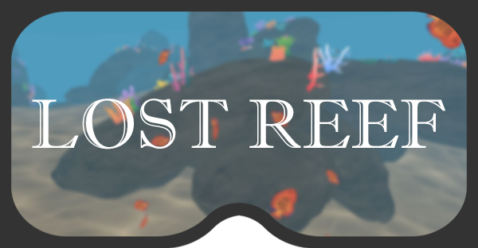

Lost Reef
- A virtual reality project for the Oculus Quest 2

Lost Reef is an interactive, Virtual Reality experience, where the user swims through a coral reef as it slowly degrades around them. The intent behind the project is to make the user feel the impact of man-made pollution on reef ecosystems, using the medium of Virtual Reality to make the experience more personal and ‘real’. The experience was designed, developed and tested for the Oculus Quest 2. It was initially developed as part of a university project with a team of 4 designers/developers (see credits), and post completion, was further refined by 2 team members


What went well - visual style. A clean, distinct visual style was achieved through toon colours and simple
shapes, adding to the experience through appealing visuals, whilst not detracting from the overall impact or
message.
What could have been done better - reef size / layout. The experience is short, and the size of the reef was
catered as such. However, users felt there could have been more to explore, such as new areas or hidden
secrets.
My contributions
> Created all shaders, interactable via code> 3D Modelling
> Designed user interactions and user experience
> Helped design the feel and atmosphere of the experience
Features
Virtual reality> Immersive environment
> Designed for google vr design guidelines
Stylised visuals
> Optimized for Oculus Quest 2 wireless performance
> Reflection and water surface shaders
> Models add environment complexity
User experience
> Menus (start, pause, options)
> Boat crash event
> Experience can be replayed after finishing
Credits
Aidan Walbran - Programmer, Interaction Designer, Experience DesignerMustafa Aqil - Sound Designer, Modeling, User Testing
James Newton - Sketching, Level Designer, User Testing